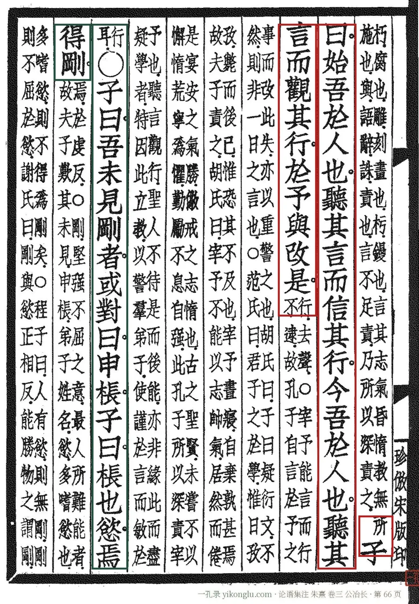

一句话：5.10 的申枨之问，是在用 5.9 刚立下的“听其言而观其行”，前一章立规矩，后一章用一次。

底本：朱熹《论语集注》，《四部备要》本，第 65—67 页；佐证页第 53、76、143、205、227 页。章号依朱注分章，杨伯峻《论语译注》等通行本作 5.10、5.11。
正文
《四部备要》本《论语集注》第六十六页，右起第二行大字是“曰始吾於人也聽其言而信其行今吾於人也聽其”，第三行接“言而觀其行於予與改是”。隔着四行小字注，第八行大字起：“子曰吾未見剛者或對曰申棖子曰棖也慾焉”，“得剛”两字转到第九行。两章印在同一面上，翻开就是并排的。
前一章是宰予白天睡觉。孔子骂完，又说了一段话：从前我看人，听了他的话就信他会做到；如今听了他的话，还要看他做了没有，这是宰予让我改的。后一章孔子说没见过刚的人。有人接话：申枨。孔子说，申枨欲望多，哪里刚得起来。
两章挨在一起，是碰巧，还是编《论语》的人有意这样放。
一孔录的看法是，后一章正好是前一章那条规矩的一次演示。孔子刚说完不能光听人说，下一章就有人光凭一个名字来答话。“或对曰”后面只有“申枨”两个字，没说申枨做过什么，像是把一个人人都觉得硬气的名字报上来。孔子回的不是名声，是这个人身上的一件实情，欲多。前一章分的是“言”和“行”，后一章分的是“名”和“实”，路数是一条：别人嘴里说出来的不作数，要看这个人自己怎么样。好比一家公司刚把招聘规矩改成看作品不看简历，下一个进门的就只报了个响亮的名号。
申枨章本身当“看人”读，前人早就读过，这一点不是一孔录先说的。朱熹的语录里说“圣人观人，直从里面看出”，见于元代朱子学者胡炳文《论语通》卷三所引“语录”。宋人何基说，真刚和意气用事的硬，“自外视之，均可谓之刚”，又说读这一章，“观人者可以是而察其所安”，见金履祥《论孟集注考证》论语卷三所引。胡炳文自己也说，“或人于申枨惑其刚之似，而夫子识其不刚之真”。清人陆陇其《四书讲义困勉录》卷八引诸家，说申枨“是貌为刚而实非也”。
章与章挨着读，前人也做。胡炳文在宰予章下写“上章深许子贡能自知，此章深责宰予不能自立”，就是把 5.8 子贡章和 5.9 宰予章连起来看。可他到了申枨章，没有回头去接宰予章的“观行”。清人刘宝楠《论语正义》把这种读法说成一条通例，叫“前后章相发明之例”，举了八佾、述而、泰伯、子张四处为证。刘宝楠拿这条通例去连的，是宰予章自己的前后两段，也就是“始吾于人也”这番话和“宰予昼寝”是不是一回事，不是宰予章和申枨章。民国程树德的《论语集释》把历代说法收得最全，申枨章下收了考证、集解、皇疏、集注、余论、发明各家，也没有一家往前接宰予章。
今人里最接近的，是网上转载的一篇薛永武短文，题为《孔子论“听其言而观其行”与“无欲则刚”》（新浪博客 2017 年转载，原刊出处未详）。他把宰予章和申枨章前后并列，开头一句说鉴别人才“不但要看一个人说什么，更要看这个人做什么，考察其是否名副其实”。这和我们说的“名与实”已经挨得很近。不过他评申枨章时，讲的是欲望多了做不到刚，没有说这一章是在用上一章的规矩。我们把这篇列在这里，读者可以自己比一比差在哪里。
离我们这个读法最近的是宋人钱时《融堂四书管见》。他在宰予章后的按语，开头四个字是“气昏欲胜”，下一章讲的恰恰是“欲”。钱时是不是有意把两章扣在一起，原文没有说，我们不替他说。
还有一路读法，把 5.9 的改规矩往淡里讲。朱注引胡氏（一般认为是胡寅）说：“听言观行，圣人不待是而后能，亦非缘此而尽疑学者，特因此立教，以警群弟子，使谨于言而敏于行耳。”照这个说法，孔子本来就会看人，改规矩只是借宰予立个教。申枨章的旧疏也不往这边接。南朝梁皇侃《论语义疏》解“吾未见刚者”是“我未见世有刚性无欲之人也”，北宋邢昺《论语注疏》说“夫子以时皆柔佞，故云吾未见刚者”，重心都在世风，不在看人的方法。
所以这条札记要立的，只有一句：5.10 的申枨之问，是在用 5.9 刚立下的“听其言而观其行”，前一章立规矩，后一章用一次。在文末列出的查证范围里，我们没有见到前人这样明说。差距不大，薛永武那篇离它只隔一层窗户纸，我们照实写出来。
《论语》里有人拿一个人来问、孔子拿亲眼所见来答的，不只申枨这一处。宪问 14.47，阙党的童子替人传话，有人问：这孩子是求上进的吗。孔子答：“吾见其居于位也，见其与先生并行也。”两句都落在一个“见”字上，说的全是看到的举动，结论是这孩子不是求进，是想速成。季氏 16.11 说得更直白：“吾闻其语矣，未见其人也。”听过的话和见过的人，孔子分开记账。
这又牵出孔子说“未见”的习惯。朱注本里孔子开口说“未见”的，共九章十处，除去季氏 16.6 讲侍坐规矩的“未见颜色而言谓之瞽”，余下八章九处都是说没见过某种人或某种情形：里仁 4.6 两处，公冶长 5.10 和 5.26，子罕 9.17 和 9.20，卫灵公 15.12 和 15.34，季氏 16.11。清人焦袁熹在《此木轩四书说》卷四里说：“所谓未见者，叹其甚难得，所以警学者耳，不必天下果无一人然后说未见也。”又说“吾未见刚者、未见内自讼之属亦然”。这话有道理，“未见”确有感叹和警醒的意思。
一孔录想补的是另一面。孔子挑的词是“未见”，不是“无”。里仁 4.6 说完“我未见力不足者”，紧跟一句“盖有之矣，我未之见也”，大概也有吧，只是我没见过。朱注在这里也说“但我偶未之见耳”（第 53 页）。叹归叹，话的边界他自己留着。雍也 6.2 哀公问谁好学，孔子说了“今也则亡”，又补一句“未闻好学者也”。
这个习惯不能说得太满。同一个问题，季康子在先进 11.6 再问一遍，孔子答到“今也则亡”就停了，没有补“未闻”。所以“孔子每说一次没有，都留一道边界”这句话，我们说不出口。能说的只是，留边界的地方不少，而且 4.6 那一句是他明着说出来的。
还有一处要交代。胡氏说 5.9 的第二个“子曰”可能是衍文，“不然，则非一日之言也”（第 66 页）。照后一种可能，宰予章本身就是两次说话拼起来的。这反倒说明，眼前的次序出自编者之手。编者把这段拼好的话，放在申枨章前面，有没有用意，今天无从知道。这条札记讲的是《论语》现在这个次序给出的读法，不是在替孔子或编者补心事。
前人怎么说
- 朱熹语录（胡炳文《论语通》卷三引）“圣人观人，直从里面看出”申枨章当“看人”读
- 何基（金履祥《论孟集注考证》论语卷三引）“自外视之，均可谓之刚……观人者可以是而察其所安”申枨章当“看人”读
- 胡炳文《论语通》卷三“或人于申枨惑其刚之似，而夫子识其不刚之真”申枨章当“看人”读
- 陆陇其《四书讲义困勉录》卷八“是貌为刚而实非也”申枨章当“看人”读
- 胡炳文《论语通》卷三“上章深许子贡能自知，此章深责宰予不能自立”把 5.8 和 5.9 连读，没有接到申枨章
- 刘宝楠《论语正义》“前后章相发明之例”连的是宰予章自己的前后两段，不是宰予章和申枨章
- 程树德《论语集释》申枨章下收了考证、集解、皇疏、集注、余论、发明各家，没有一家往前接宰予章
- 薛永武《孔子论“听其言而观其行”与“无欲则刚”》（新浪博客 2017 年转载，原刊出处未详）“不但要看一个人说什么，更要看这个人做什么，考察其是否名副其实”两章并列，离本条最近，但没说申枨章在用上一章的规矩
- 钱时《融堂四书管见》卷三“气昏欲胜”宰予章按语开头四字，下一章正讲“欲”；原文没说两章相扣
- 朱注引胡氏（一般认为是胡寅）“听言观行，圣人不待是而后能，亦非缘此而尽疑学者，特因此立教”把 5.9 的改规矩往淡里讲
- 皇侃《论语义疏》；邢昺《论语注疏》“我未见世有刚性无欲之人也；夫子以时皆柔佞，故云吾未见刚者”申枨章重心在世风，不在看人的方法
- 焦袁熹《此木轩四书说》卷四“所谓未见者，叹其甚难得，所以警学者耳”论孔子说“未见”
查证范围（截至 2026-11-26）
- 对过原页或影印的引文
- 朱熹《论语集注》，《四部备要》本第 53、65、66、76、143、205、227 页（一孔录原页库）；刘宝楠《论语正义》“前后章相发明之例”一段，原页在一孔录所存《论语正义》第二册扫描第 13 页右；胡炳文《论语通》卷三的三处引文（含所引朱子语录），对文渊阁《四库全书》影印本第 203 册第 168、169 页；焦袁熹《此木轩四书说》卷四一段，对文渊阁《四库全书》影印本第 210 册第 582 页；薛永武短文，读的是新浪博客转载全文。
- 只对了录文、没对影印的引文
- 何基语（金履祥《论孟集注考证》论语卷三，维基文库四库全书本录文）；钱时《融堂四书管见》卷三（维基文库录文）；陆陇其《四书讲义困勉录》卷八（维基文库四库全书本录文）；皇侃《论语义疏》（维基文库四库全书本录文）；邢昺《论语注疏》（维基文库录文）。这五处在网站上线后补对影印，对出差异走勘误。
- 看过该章、没有直接引用的
- 何晏《论语集解》；程颐语（《二程遗书》卷九）与《朱子语类》卷二十八的检索片段；程树德《论语集释》宰予章、申枨章两章全文（互联网档案馆所存中华书局排印本第一册的识别文字，申枨章下各家无一接宰予章）。
- 做过的全文检索
- 维基文库全站检索“聽其言而觀其行 申棖”“未見剛者 次 宰予”“吾未見 未之見 未見其人 聖人”三组，逐条看了命中的注本与文集；百度学术检索“吾未见刚者 听其言而观其行”“吾未见刚者”“论语 未见 孔子”；通用网页检索三组。命中的今人文章多是听言观行的普及短文，讨论两章次序的只有上面那篇薛永武短文，而且没有明说。
- 没查的
- 钱穆《论语新解》；杨伯峻《论语译注》；李零《丧家狗》；知网、万方的全文；日本荻生徂徕《论语征》、伊藤仁斋《论语古义》等江户注本；朝鲜文献；英文研究。中国哲学书电子化计划（ctext）明示不许自动程序抓取，这次没有用它。
- 还没核实的
- 《此木轩四书说》作者署焦袁熹，按通行著录；“胡氏”指胡寅，按通说；“圣人观人直从里面看出”转引自《论语通》，未对《朱子语类》原卷；薛永武短文的原刊出处。
什么情况下这条要改
如果有人查到前人已经明说宰予章与申枨章是“立规矩、用规矩”前后相承，尤其是日本江户时代的注本，程树德《论语集释》没有收进去的明清讲章，或薛永武那篇短文的原刊本，这条札记就改署“前人已发，一孔录补证”，在勘误记录里写明是谁、在哪本书、哪一页，并致谢来信的人。
引用本文
存档 PDF（与 Zenodo 存档同一份）：yikong-zhaji-0001-v1.0.pdf
文件指纹 SHA-256：b935f1f0221f02292b28e19df6ad62c4d3feabadef7f7f4133b8b6207b96d996
勘误记录
暂无。
本文采用 CC BY 4.0 许可，转载请署名“一孔录”并附本页网址。发现错处或前人已经说过，请来信，核实后记入勘误，署你的网名。